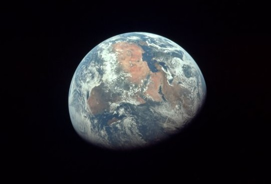

Planeter
Vi mennesker bor på planeten Jorda.
Mange mener at jorda er som skapt for oss til å leve på,
men det er kanskje riktigere å si at vi er skapt for å leve på jorda.
Men vi kan ikke si med sikkerhet hvor mye lenger det vil være mulig å bo
trygt her. Kanskje må vi begynne å bo på andre planeter.
La oss se hvilke planeter som finnes nærmest oss, i vårt solsystem!